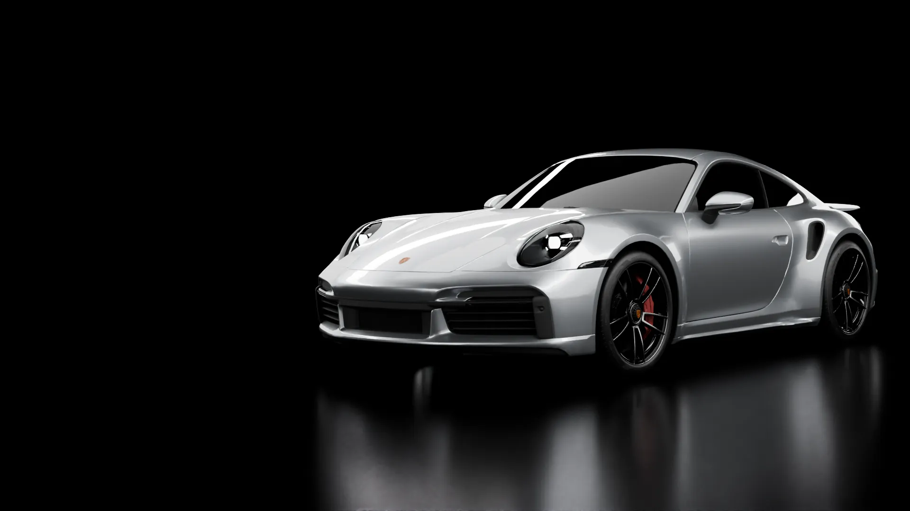
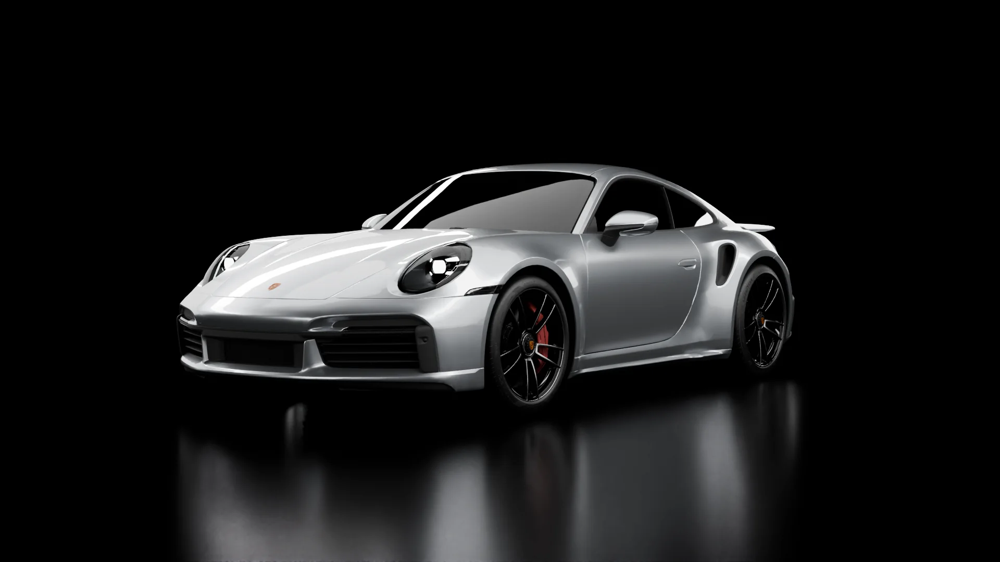

Ukázka · Whyte Lynx
Projeďte si ho celý, kolem dokola a pak dovnitř.
Posouvejte dolůOd světlometů po záď, na výšku jen 1 303 mm.
Záď je široká 1 900 mm a motor je hned za ní.
Dál už se jede zevnitř.
Uprostřed otáčkoměr, po stranách dva displeje.
Střední obrazovka, pod ní řada přepínačů a volič převodovky.
Technika

Stříbrná metalíza
O ukázce
Auto se kreslí živě přímo ve Vašem prohlížeči a kamera jede tak, jak posouváte stránkou. Proto se obraz nikde nezasekne, na počítači ani na telefonu, a lak můžete přebarvit rovnou na autě.
Místo auta může být Váš výrobek, provozovna nebo dům. Vzhled, barvy i texty jsou jen ukázka a dají se předělat podle toho, co prodáváte.
Chci podobnou stránku